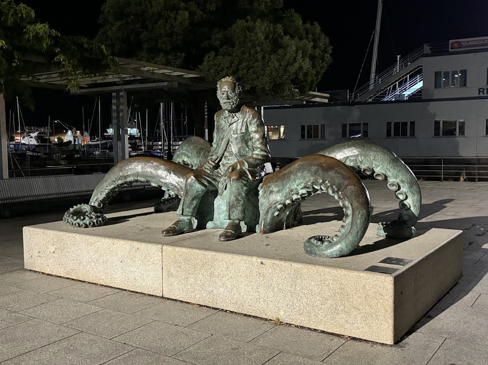
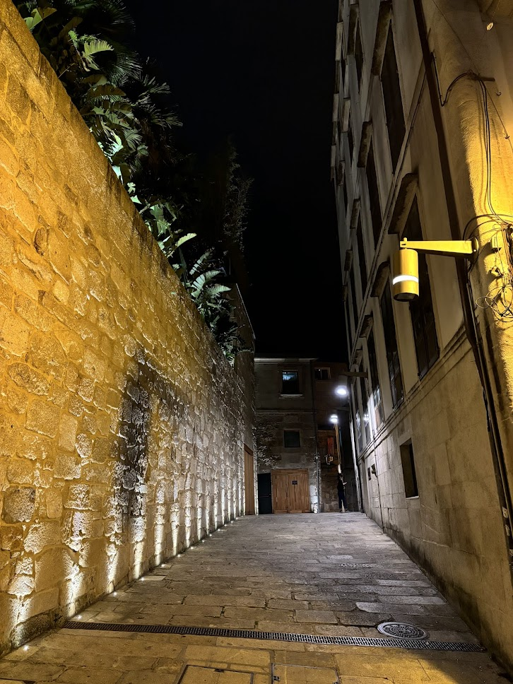
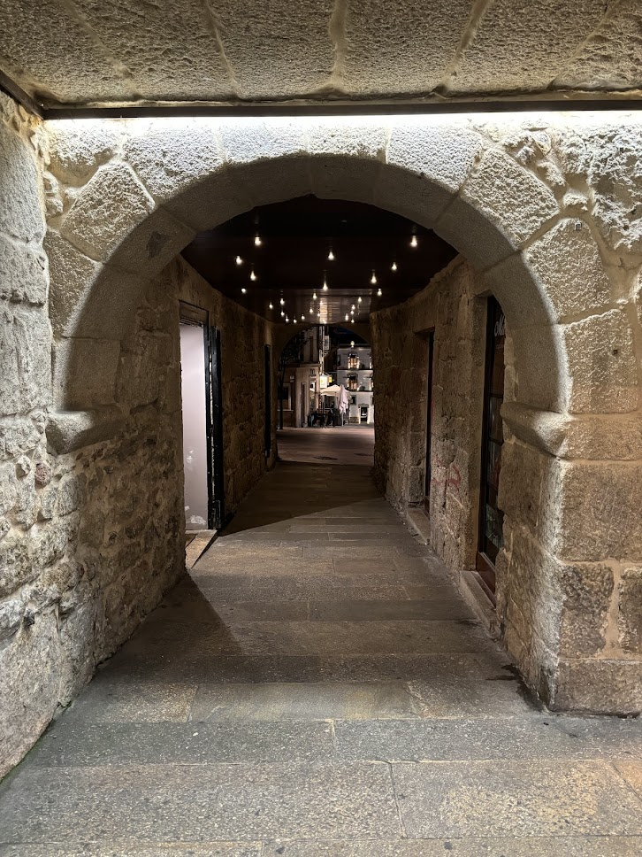
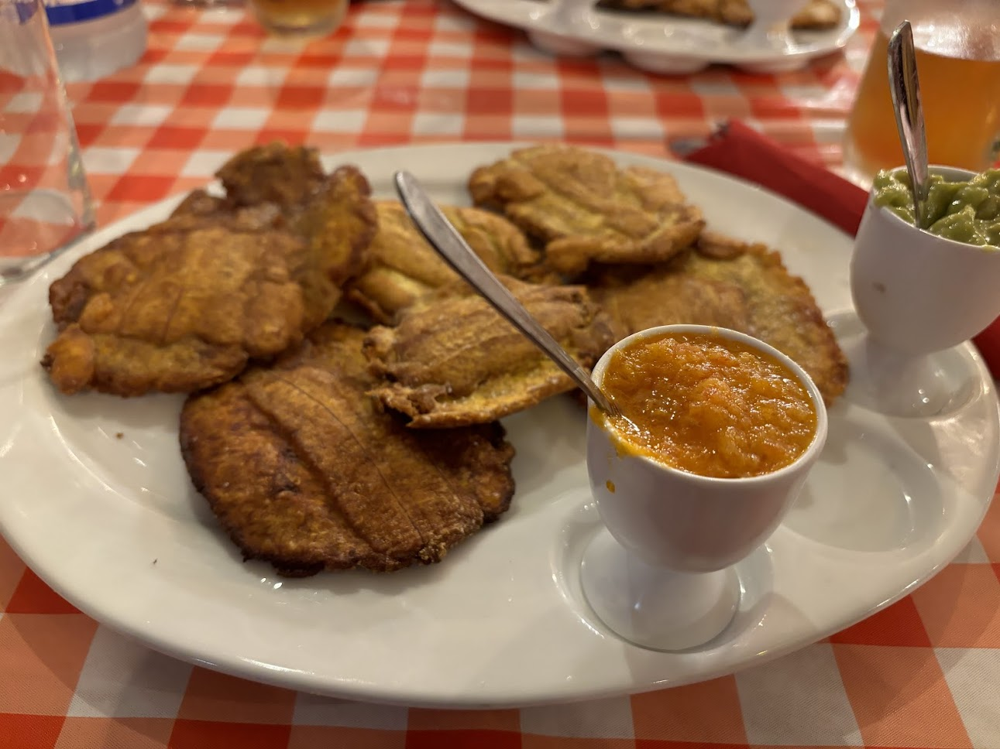
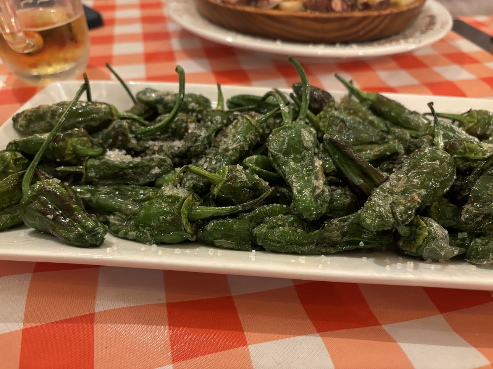
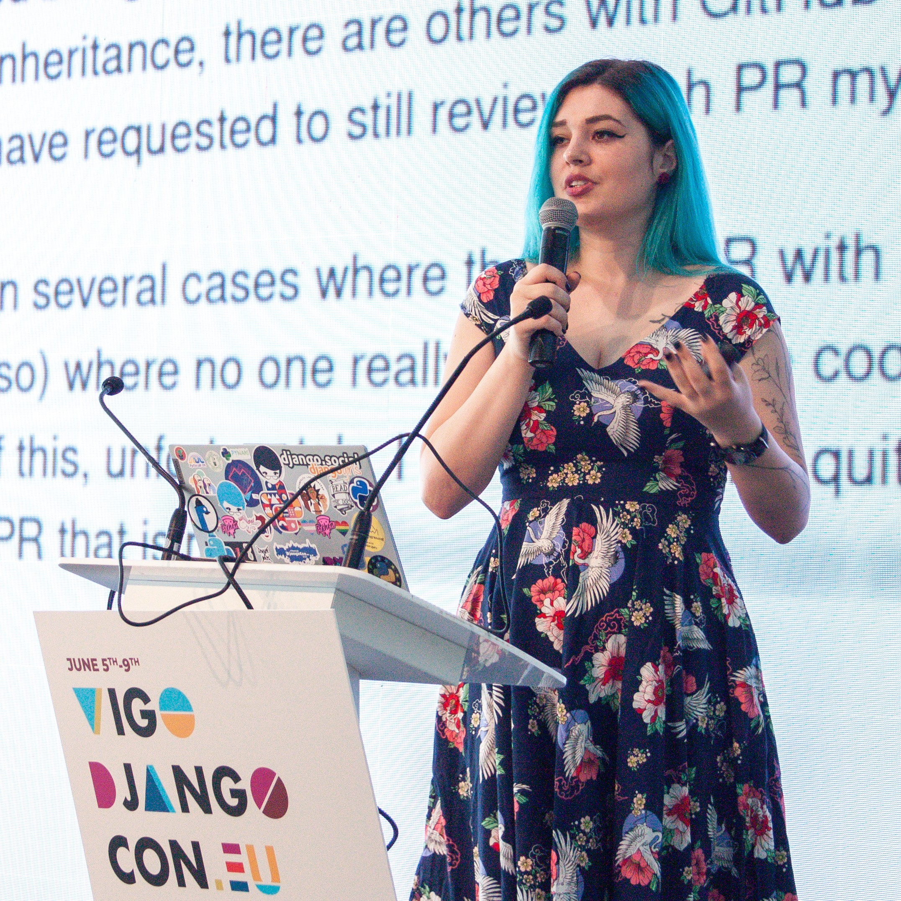
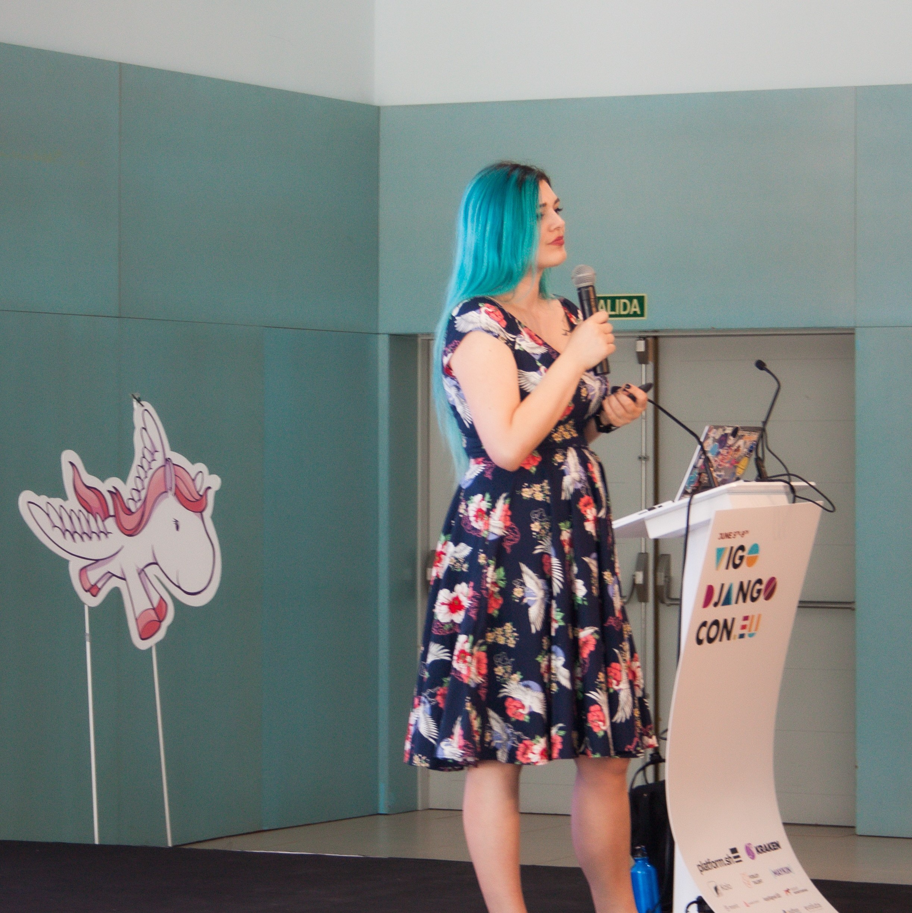
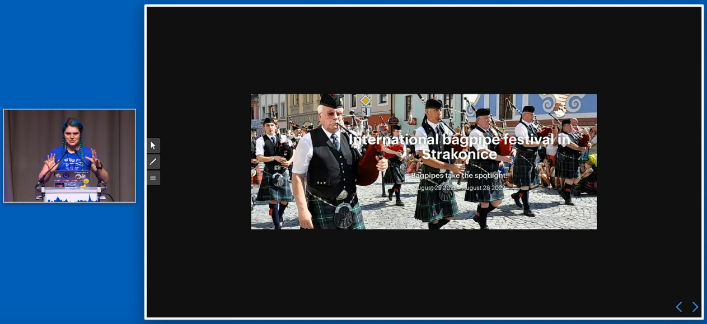
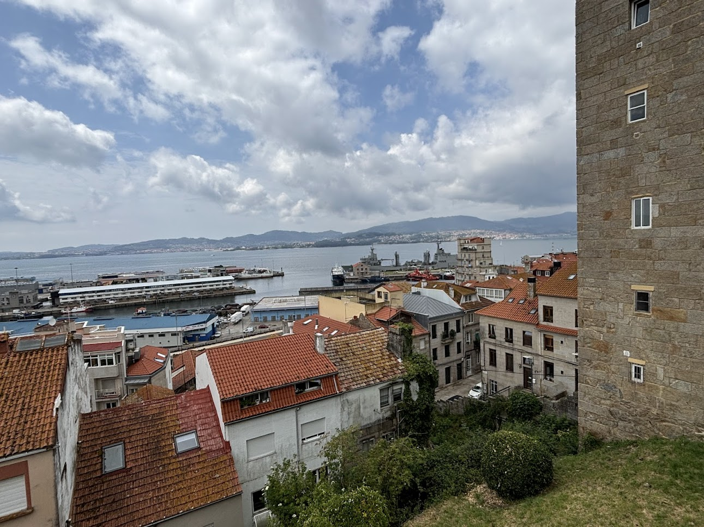
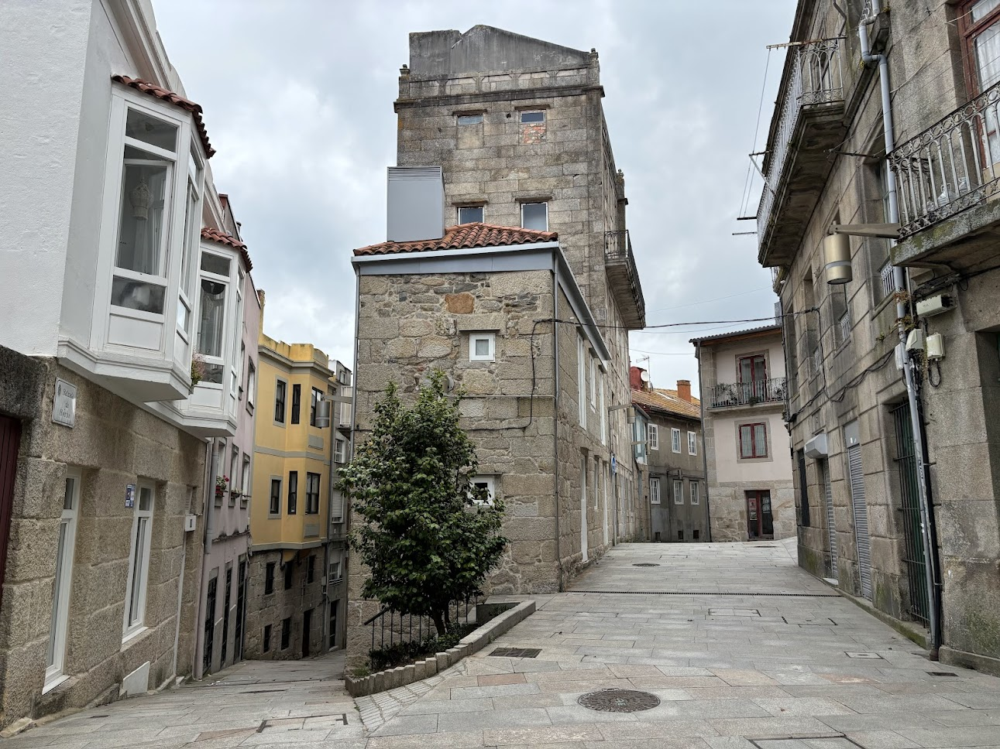

Djangocon: Sunny Spain, My Talk & Some Thoughts About Public Speaking
Spain
Djangocon was held this year in the charming city of Vigo, in Northern Spain, just above Portugal. Vigo is a small, picturesque city full of cute streets and passages.



What I love about Spain is its vibrant, outdoor culture. As night falls, everyone heads out to dine together. Everything I ate was delicious. I tried potato pancakes and salty chili peppers for the first time and loved them!


Djangocon
Djangocon is one of my favorite conferences. It’s single-track, meaning everyone is together. It’s very community-oriented, and I see many familiar faces each year. Unlike big conferences where people stick to their groups, at Djangocon, whether I go with colleagues or alone, I always enjoy it because everyone is so nice, friendly, and open.
About Public Speaking
As a logical, analytical, and facts-oriented person, I’m fascinated by storytelling and how it can be more impactful than mere facts.
I remember Nicholas once told me that the best speakers are those who are vulnerable on stage. This requires experience and self-confidence. I didn’t fully grasp this until I delivered my talk at Djangocon.
My Talk
I spent months taking public speaking lessons, reading books, and preparing perfect notes and slides for my talk. However, I decided to take a risk: I grabbed the microphone, stood in front of the audience, and spoke without prepared notes, choosing to be vulnerable. It was incredible! Although I delivered the same talk in the US and Italy, I never felt as connected to the audience as I did at Djangocon. In the US, the bright lights and echo made it hard to see the audience, and in Italy, a guy slept through my entire talk, which was distracting.
Instead of sticking to general facts, I shared personal stories. The feedback was overwhelmingly positive—three people mentioned my talk as one of their favorites! I worried about pauses, grammar mistakes, and mispronunciations, but what truly matters is engagement, which is easier to create when you’re not hidden behind the podium. While I don’t plan to repeat this talk, I’m grateful for the experience and will keep it in mind for future presentations.



My Lightning Talk
For the second year in a row, EuroPython was held in Prague, and I delivered a lightning talk announcing it. I enjoy making fun performances and I always put a lot of effort into them. In Edinburgh I gave a lightning talk about what do Prague and Edinburgh have in common - if you think nothing, you’d be surprised!

This year, I decided to create a game for my lightning talk. My colleague from the EuroPython Society Artur and I spent the entire day figuring out the best way to present it. We decided to show three cities, ask the audience to guess them, and reward those who guessed what they had in common with a Python cookie cutter I brought with me. I showed the first photo of a city that had nothing in common with Prague, and guess what everyone said—Prague! No spoilers for the game, but I just want to say that the lightning talk was SO much fun, and a lucky person got a cookie cutter!
If EuroPython happens in Prague again and I’m doing another announcement at Djangocon, I might just stand on stage for five minutes—everyone will know what it’s about.

Talks URL
My talk is already online! Check it out here: https://www.youtube.com/watch?v=AERuDe9YxWE. Slides are available here: https://github.com/clytaemnestra/talks/blob/main/django-orm-fast-api-djangocon.pdf.
My lightning talk is also available! If you want to play a game, check it out here: https://youtu.be/Fpdm0g9v6YU?t=1436.
And here’s my previous lightning talk about what do Prague & Edinburgh have in common: https://youtu.be/Zc0W3L1tIZM?t=2343.
Thank you!
I’d like to thank everyone who supported me throughout my talk:
- My ex-manager Tomáš Bartál for his support and allowing me preparation time during work hours.
- My friend and colleague from the EuroPython Society Artur Czepiel for support and reviewing Django-related content.
- Ataccama for their support and allowing me to share my experiences, some of which were work-related.
- Nicole Adelman for support and providing public speaking lessons.
- And to all the people at various tech events I attended in the last few months, who provided their insights on Python frameworks that helped shape my talk.
A big thanks to all the volunteer organizers for their effort in making this amazing event happen. Can’t wait for next year in Dublin!

